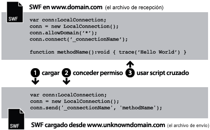
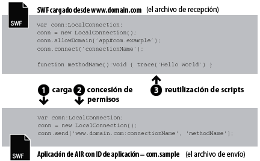

| Paquete | flash.net |
| Clase | public class LocalConnection |
| Herencia | LocalConnection |
| Versión del lenguaje: | ActionScript 3.0 |
| Versiones de motor de ejecución: | AIR 1.0, Flash Player 9, Flash Lite 4 |
- En un único archivo SWF
- Entre varios archivos SFW
- Entre contenido (basado en SWF o en HTML) de aplicaciones de AIR
- Entre contenido (basado en SWF o en HTML) de una aplicación de AIR y contenido SWF ejecutado en un navegador
Compatibilidad con perfil de AIR: esta característica se admite en todos los sistemas operativos de escritorio y en todos dispositivos de AIR para TV, pero no en dispositivos móviles. Puede comprobar la compatibilidad en tiempo de ejecución mediante la propiedad LocalConnection.isSupported. Consulte Compatibilidad con perfil de AIR para obtener información sobre la compatibilidad de la API con varios perfiles.
Nota: los dispositivos de AIR para TV admiten comunicación sólo entre contenido basado en SWF en aplicaciones de AIR.
Las conexiones locales permiten este tipo de comunicación entre archivos SWF sin necesidad de utilizar fscommand() o JavaScript. Los objetos LocalConnection sólo pueden comunicarse entre archivos que se ejecuten en el mismo equipo cliente, aunque pueden estar ejecutándose en diferentes aplicaciones: por ejemplo, un archivo que se esté ejecutando en un navegador y un archivo SWF que se esté ejecutando en Adobe AIR.
Los objetos LocalConnection creados con ActionScript 3.0 se pueden comunicar con objetos LocalConnection creados con ActionScript 1.0 ó 2.0. También al contrario: los objetos LocalConnection creados con ActionScript 1.0 ó 2.0 se pueden comunicar con objetos LocalConnection creados con ActionScript 3.0. Flash Player maneja automáticamente esta comunicación entre objetos LocalConnection de distintas versiones.
Hay tres formas de añadir métodos callback a los objetos LocalConnection:
- Crear una subclase de la clase LocalConnection y añadir métodos.
- Establecer la propiedad
LocalConnection.clienten un objeto que implemente los métodos. - Crear una clase dinámica que amplíe LocalConnection y asociar métodos de forma dinámica.
Para comprender cómo se utilizan los objetos LocalConnection en la implementación de la comunicación entre dos archivos, resulta útil identificar los comandos empleados en cada archivo. Un archivo recibe el nombre de archivo receptor; se trata del archivo que contiene el método que se va a invocar. El archivo receptor debe contener otro objeto LocalConnection y realizar una llamada al método connect(). El otro archivo recibe el nombre de archivo emisor; se trata del archivo que invoca el método. El archivo emisor debe contener un objeto LocalConnection y una llamada al método send().
El uso de send() y connect() varía si los archivos están en el mismo dominio, en dominios distintos con nombres de dominio predecibles o en dominios diferentes con nombres de dominio impredecibles o dinámicos. En los párrafos siguientes se explican los tres casos distintos y se proporcionan muestras de código para cada uno.
Mismo dominio. Es la forma más sencilla de utilizar un objeto LocalConnection para permitir la comunicación únicamente entre objetos LocalConnection ubicados en el mismo dominio, ya que, de forma predeterminada, se permite la comunicación entre dominios iguales. Si se comunican dos archivos del mismo dominio, no es necesario implementar ninguna medida de seguridad especial: simplemente se transfiere el mismo valor para el parámetro connectionName tanto al método connect() como al método send():

// receivingLC is in http://www.domain.com/receiving.swf
receivingLC.connect('myConnection');
// sendingLC is in http://www.domain.com/sending.swf
// myMethod() is defined in sending.swf
sendingLC.send('myConnection', 'myMethod');
Dominios distintos con nombres de dominio predecibles. Cuando se comunican dos archivos SWF de dominios distintos, es necesario permitir la comunicación entre ellos llamando al método allowDomain(). También es necesario calificar el nombre de la conexión en el método send() con el nombre del dominio del objeto LocalConnection receptor:

// receivingLC is in http://www.domain.com/receiving.swf
receivingLC.allowDomain('www.anotherdomain.com');
receivingLC.connect('myConnection');
// sendingLC is in http://www.anotherdomain.com/sending.swf
sendingLC.send('www.domain.com:myConnection', 'myMethod');
Dominios distintos con nombres de dominio no predecibles. En ocasiones, es probable que quiera que el archivo con el objeto LocalConnection receptor presente una mayor portabilidad entre dominios. Para evitar tener que especificar el nombre del dominio en el método send(), pero sí indicar que los objetos LocalConnection emisores y receptores no se encuentran en el mismo dominio, preceda el nombre de la conexión con un carácter de subrayado (_) en las llamadas a connect() y a send(). Para permitir la comunicación entre dos dominios, llame al método allowDomain() y transfiera los dominios para los que desee permitir llamadas de LocalConnection. También puede transferir el argumento comodín (*) para permitir llamadas desde todos los dominios:

// receivingLC is in http://www.domain.com/receiving.swf
receivingLC.allowDomain('*');
receivingLC.connect('_myConnection');
// sendingLC is in http://www.anotherdomain.com/sending.swf
sendingLC.send('_myConnection', 'myMethod');
De Flash Player a una aplicación de AIR. Un objeto LocalConnection creado en el entorno limitado de la aplicación de AIR usa una cadena como prefijo de conexión en lugar de un nombre de dominio. Esta cadena tiene la forma: app#appID.pubID donde appID es el ID de aplicación y pubID es el ID del editor de la aplicación. (Sólo se debe incluir ID de editor si la aplicación de AIR utiliza un ID de editor.) Por ejemplo, si una aplicación de AIR tiene un ID de aplicación "com.example" y ningún ID de editor, puede utilizar: app#com.example:myConnection como cadena de conexión local. La aplicación de AIR también debe llamar al método allowDomain(), transfiriendo el dominio del archivo SWF que realiza la llamada de origen:

// receivingLC is an AIR application with app ID = com.example (and no publisher ID)
receivingLC.allowDomain('www.domain.com');
receivingLC.connect('myConnection');
// sendingLC is in http://www.domain.com/sending.swf
sendingLC.send('app#com.example:myConnection', 'myMethod');
Nota: si una aplicación de AIR carga un archivo SWF fuera del entorno limitado de la aplicación de AIR, las reglas para establecer una conexión local con ese SWF son las mismas que las reglas para establecer una conexión con un archivo SWF ejecutado en Flash Player.
De una aplicación de AIR a Flash Player. Cuando una aplicación de AIR se comunica con un SWF ejecutado en el motor de ejecución de Flash Player, es necesario permitir la comunicación entre los dos llamando al método allowDomain() y transfiriendo el prefijo de conexión de la aplicación de AIR. Por ejemplo, si una aplicación de AIR tiene un ID de aplicación "com.example" y ningún ID de editor, podría transferir la cadena: app#com.example al método allowDomain(). También es necesario calificar el nombre de la conexión en el método send() con el nombre del dominio del objeto LocalConnection receptor (use "localhost" como dominio para archivos SWF cargados desde el sistema de archivos local):

// receivingLC is in http://www.domain.com/receiving.swf
receivingLC.allowDomain('app#com.example');
receivingLC.connect('myConnection');
// sendingLC is an AIR application with app ID = com.example (and no publisher ID)
sendingLC.send('www.domain.com:myConnection', 'myMethod');
Entre aplicaciones de AIR. Para comunicarse entre dos aplicaciones de AIR, es necesario permitir la comunicación entre ambas llamando al método allowDomain() y transferir el prefijo de conexión de la aplicación de AIR de envío. Por ejemplo, si una aplicación de envío tiene un ID de aplicación "com.example" y ningún ID de editor, podría transferir la cadena: app#com.example al método allowDomain() de la aplicación receptora. También es necesario calificar el nombre de la conexión en el método send() con el prefijo de conexión del objeto LocalConnection receptor:

// receivingLC is an AIR application with app ID = com.sample (and no publisher ID)
receivingLC.allowDomain('app#com.example');
receivingLC.connect('myConnection');
// sendingLC is an AIR application with app ID = com.example (and no publisher ID)
sendingLC.send('app#com.sample:myConnection', 'myMethod');
Se pueden utilizar objetos LocalConnection para enviar y recibir datos en un solo archivo, pero no suele ser lo habitual.
Para más información sobre los métodos send() y connect(), consulte la descripción del parámetro connectionName en las entradas LocalConnection.send() y LocalConnection.connect(). Asimismo, consulte las entradas allowDomain() y domain.
Elementos de API relacionados
flash.net.LocalConnection.allowDomain()
flash.net.LocalConnection.domain
 Ocultar propiedades públicas heredadas
Ocultar propiedades públicas heredadas Mostrar propiedades públicas heredadas
Mostrar propiedades públicas heredadas| Propiedad | Definido por | ||
|---|---|---|---|
| client : Object
Indica el objeto en el que se invocan los métodos callback. | LocalConnection | ||
 | constructor : Object
Una referencia a la clase de objeto o función constructora para una instancia de objeto determinada. | Object | |
| domain : String [solo lectura]
Una cadena que representa el dominio de la ubicación del archivo actual. | LocalConnection | ||
| isPerUser : Boolean
Indica si el objeto LocalConnection está limitado al usuario actual (true) o si todos los usuarios pueden acceder globalmente en el equipo (false). | LocalConnection | ||
| isSupported : Boolean [estática] [solo lectura]
La propiedad isSupported se establece en true si la clase LocalConnection se admite en la plataforma actual; en caso contrario, se establece en false. | LocalConnection | ||
| Método | Definido por | ||
|---|---|---|---|
Crea un objeto LocalConnection. | LocalConnection | ||
| addEventListener(type:String, listener:Function, useCapture:Boolean = false, priority:int = 0, useWeakReference:Boolean = false):void
Registra un objeto de detector de eventos con un objeto EventDispatcher, de modo que el detector reciba la notificación de un evento. | EventDispatcher | |
Especifica uno o varios dominios que pueden enviar las llamadas a LocalConnection a esta instancia de LocalConnection. | LocalConnection | ||
Especifica uno o varios dominios que pueden enviar las llamadas a LocalConnection a este objeto LocalConnection. | LocalConnection | ||
Cierra (desconecta) un objeto LocalConnection. | LocalConnection | ||
Prepara un objeto LocalConnection para recibir comandos que se envían desde un comando send() (desde el objeto LocalConnection emisor). | LocalConnection | ||
|
Distribuye un evento en el flujo del evento. | EventDispatcher | |
|
Comprueba si el objeto EventDispatcher tiene detectores registrados para un tipo concreto de evento. | EventDispatcher | |
|
Indica si un objeto tiene definida una propiedad especificada. | Object | |
|
Indica si hay una instancia de la clase Object en la cadena de prototipo del objeto especificado como parámetro. | Object | |
|
Indica si existe la propiedad especificada y si es enumerable. | Object | |
|
Elimina un detector del objeto EventDispatcher. | EventDispatcher | |
Invoca el método denominado methodName en una conexión abierta con el método connect(connectionName) (en el objeto LocalConnection receptor). | LocalConnection | ||
|
Establece la disponibilidad de una propiedad dinámica para operaciones de bucle. | Object | |
|
Devuelve la representación de cadena de este objeto, con formato según las convenciones específicas de configuración regional. | Object | |
|
Devuelve la representación de cadena del objeto especificado. | Object | |
|
Devuelve el valor simple del objeto especificado. | Object | |
|
Comprueba si hay registrado un detector de eventos con este objeto EventDispatcher o con cualquiera de sus ascendientes para el tipo de evento concreto. | EventDispatcher | |
| Evento | Resumen | Definido por | ||
|---|---|---|---|---|
| [evento broadcast] Se distribuye cuando Flash Player o AIR pasan a estar activos. | EventDispatcher | ||
| Se distribuye cuando se emite una excepción de forma asíncrona, es decir, desde un código asíncrono nativo. | LocalConnection | |||
| [evento broadcast] Se distribuye cuando Flash Player o de AIR pasan a estar inactivos. | EventDispatcher | ||
| Se distribuye si una llamada a LocalConnection.send() intenta enviar datos a un entorno limitado de seguridad distinto. | LocalConnection | |||
| Se distribuye cuando un objeto LocalConnection informa sobre su estado. | LocalConnection | |||
client | propiedad |
client:Object| Versión del lenguaje: | ActionScript 3.0 |
| Versiones de motor de ejecución: | AIR 1.0, Flash Player 9, Flash Lite 4 |
Indica el objeto en el que se invocan los métodos callback. El objeto predeterminado es this (la conexión local que se está creando). Se puede establecer la propiedad client en otro objeto y los métodos callback se invocarán en dicho objeto.
Implementación
public function get client():Object public function set client(value:Object):voidEmite
TypeError — La propiedad client debe establecerse en un objeto que no tenga valor null.
|
domain | propiedad |
domain:String [solo lectura] | Versión del lenguaje: | ActionScript 3.0 |
| Versiones de motor de ejecución: | AIR 1.0, Flash Player 9, Flash Lite 4 |
Una cadena que representa el dominio de la ubicación del archivo actual.
En el contenido ejecutado en el entorno limitado de seguridad de la aplicación de Adobe AIR (contenido instalado con la aplicación de AIR), el motor de ejecución utiliza la cadena app# seguida del ID de la aplicación de AIR (definido en el archivo descriptor de la aplicación) en el lugar del superdominio. Por ejemplo, connectionName en una aplicación con com.example.air.MyApp como ID de aplicación, connectionName se resuelve como "app#com.example.air.MyApp:connectionName".
En archivos SWF publicados para Flash Player 9 o posterior, la cadena devuelta es el dominio exacto del archivo, incluidos los subdominios. Por ejemplo, si el archivo está situado en www.adobe.com, este comando devolverá "www.adobe.com".
Si el archivo actual es un archivo local que reside en el equipo cliente ejecutado en Flash Player, este comando devolverá "localhost".
Esta propiedad se utiliza habitualmente incluyendo el nombre del dominio del objeto LocalConnection emisor como parámetro del método que tiene previsto invocar en el objeto LocalConnection receptor o para su uso con LocalConnection.allowDomain() para aceptar comandos de un dominio determinado. Si desea permitir la comunicación sólo entre objetos LocalConnection que se encuentren en el mismo dominio, probablemente no necesite utilizar esta propiedad.
Implementación
public function get domain():StringElementos de API relacionados
isPerUser | propiedad |
isPerUser:Boolean| Versión del lenguaje: | ActionScript 3.0 |
| Versiones de motor de ejecución: | Flash Player 10.0.32, AIR 1.5.2 |
Indica si el objeto LocalConnection está limitado al usuario actual (true) o si todos los usuarios pueden acceder globalmente en el equipo (false). Esta propiedad solo afecta al contenido que se ejecuta en Mac OS X; en otras plataformas, este parámetro se omite. Las conexiones en sistemas operativos Windows y Linux siempre se realizan por usuario independiente.
En Flash Player 10.0.22 y versiones anteriores, y en AIR 1.5.1 y versiones anteriores, todos los objetos LocalConnection en Mac OS X tienen un ámbito global. Establezca esta propiedad en true a menos que necesite para mantener la compatibilidad con versiones anteriores. En versiones futuras, el valor predeterminado de esta propiedad puede cambiar a true.
El valor predeterminado es false.
Implementación
public function get isPerUser():Boolean public function set isPerUser(value:Boolean):voidisSupported | propiedad |
isSupported:Boolean [solo lectura] | Versión del lenguaje: | ActionScript 3.0 |
| Versiones de motor de ejecución: | Flash Player 10.1, AIR 2 |
La propiedad isSupported se establece en true si la clase LocalConnection se admite en la plataforma actual; en caso contrario, se establece en false.
Implementación
public static function get isSupported():BooleanLocalConnection | () | Información sobre |
public function LocalConnection()| Versión del lenguaje: | ActionScript 3.0 |
| Versiones de motor de ejecución: | AIR 1.0, Flash Player 9, Flash Lite 4 |
Crea un objeto LocalConnection. Los objetos LocalConnection se pueden utilizar para habilitar la comunicación entre distintos archivos que se ejecuten en el mismo equipo cliente.
Elementos de API relacionados
allowDomain | () | método |
public function allowDomain(... domains):void| Versión del lenguaje: | ActionScript 3.0 |
| Versiones de motor de ejecución: | AIR 1.0, Flash Player 9, Flash Lite 4 |
Especifica uno o varios dominios que pueden enviar las llamadas a LocalConnection a esta instancia de LocalConnection.
Este método no se puede utilizar para hacer que los archivos alojados mediante un protocolo seguro (HTTPS) permitan el acceso desde los archivos alojados en protocolos no seguros; para ello, se deberá utilizar el método allowInsecureDomain().
Es posible que desee utilizar este método para que un archivo secundario de un dominio diferente pueda hacer llamadas LocalConnection al archivo principal, cuando no conoce el dominio final del que proviene el archivo secundario. Por ejemplo, esto puede ocurrir cuando se utilizan redirecciones de reparto de carga o servidores de terceros. En este caso, puede utilizar la propiedad url del objeto LoaderInfo usado con la carga, para obtener el dominio que se utilizará con el método allowDomain(). Por ejemplo, si utiliza un objeto Loader para cargar un archivo secundario, una vez que se haya cargado el archivo, puede comprobar la propiedad contentLoaderInfo.url del objeto Loader y analizar el dominio fuera de la cadena URL completa. Si lo hace, asegúrese de que espera a que se cargue el archivo, ya que la propiedad contentLoaderInfo.url no dispondrá de su valor final correcto hasta que el archivo esté completamente cargado.
También puede darse la situación contraria: puede crear un archivo secundario que quiera aceptar llamadas LocalConnection de su archivo principal pero que no conozca el dominio de su archivo principal. En este caso, para implementar este método, compruebe si el argumento de dominio coincide con el dominio de la propiedad loaderInfo.url en el archivo que se ha cargado. Una vez más, deberá analizar el dominio fuera de la URL completa de loaderInfo.url. En este caso, no tendrá que esperar a que se cargue el archivo principal; el archivo principal ya estará cargado en el momento en que se cargue el archivo secundario.
Cuando utilice este método, tenga en cuenta el modelo de seguridad de Flash Player. De forma predeterminada, un objeto LocalConnection está asociado con el entorno limitado del archivo que lo creó y no se admiten llamadas de varios dominios a objetos LocalConnection a menos que se haya llamado al método LocalConnection.allowDomain() en el archivo receptor. Sin embargo, en Adobe AIR, el contenido del entorno limitado de seguridad de la aplicación (contenido instalado con la aplicación de AIR) no está limitado por estas restricciones de seguridad.
Para obtener más información, consulte el tema del Centro de desarrollo de Flash Player Seguridad.
Nota: el método allowDomain() ha cambiado desde ActionScript 1.0 y 2.0. En dichas versiones anteriores, allowDomain era un método callback que se implementaba. En ActionScript 3.0, allowDomain() es un método incorporado de LocalConnection que puede recibir llamadas. Con este cambio, el funcionamiento de allowDomain() es muy similar al de flash.system.Security.allowDomain().
Parámetros
... domains — Una o varias cadenas que dan nombre a los dominios en los que se quiere permitir la recepción de llamadas LocalConnection. Este parámetro tiene dos casos especiales:
|
Emite
ArgumentError — Todos los parámetros especificados no deben ser nulos.
|
Elementos de API relacionados
allowInsecureDomain | () | método |
public function allowInsecureDomain(... domains):void| Versión del lenguaje: | ActionScript 3.0 |
| Versiones de motor de ejecución: | AIR 1.0, Flash Player 9, Flash Lite 4 |
Especifica uno o varios dominios que pueden enviar las llamadas a LocalConnection a este objeto LocalConnection.
El funcionamiento del método allowInsecureDomain() es exactamente igual que el del método allowDomain(), con la excepción de que el método allowInsecureDomain() también permite que los archivos que no proceden de HTTPS puedan enviar llamadas LocalConnection a archivos SWF que sí proceden de HTTPS. Esta diferencia sólo es importante si se llama al método allowInsecureDomain() desde un archivo cargado con HTTPS. Debe llamar al método allowInsecureDomain() aunque atraviese una zona no HTTPS/HTTPS dentro del mismo dominio; de forma predeterminada, las llamadas LocalConnection nunca están permitidas desde archivos que no procedan de HTTPS a archivos HTTPS, incluso si se encuentran en el mismo dominio.
No se recomienda llamar a allowInsecureDomain(), ya que podría poner en riesgo la seguridad que ofrece HTTPS. Si carga un archivo mediante HTTPS, puede tener la seguridad razonable de que dicho archivo no se modificará durante su envío por la red. Si permite que un archivo que no procede de HTTPS realice llamadas LocalConnection al archivo HTTPS, estará aceptando llamadas de un archivo que podría, en realidad, haberse modificado durante su envío. Esto suele requerir una mayor vigilancia, ya que no se puede confiar en la autenticidad de las llamadas LocalConnection que llegan al archivo HTTPS.
De manera predeterminada, sólo los archivos alojados mediante un protocolo HTTPS pueden acceder a otros archivos alojados mediante el protocolo HTTPS. Esta implementación mantiene la integridad que ofrece el protocolo HTTPS.
No es recomendable utilizar este método para sustituir el comportamiento predeterminado, ya que pone en riesgo la seguridad de HTTPS. Sin embargo, es posible que tenga que hacerlo, por ejemplo, si necesita permitir el acceso a archivos HTTPS SWF publicados para Flash Player 9 o posterior desde archivos HTTP SWF publicados para Flash Player 6 o versiones anteriores.
Para obtener más información, consulte el tema del Centro de desarrollo de Flash Player Seguridad.
Parámetros
... domains — Una o varias cadenas que dan nombre a los dominios en los que se quiere permitir la recepción de llamadas LocalConnection. Hay dos casos especiales para este parámetro:
|
Emite
ArgumentError — Todos los parámetros especificados no deben ser nulos.
|
Elementos de API relacionados
close | () | método |
public function close():void| Versión del lenguaje: | ActionScript 3.0 |
| Versiones de motor de ejecución: | AIR 1.0, Flash Player 9, Flash Lite 4 |
Cierra (desconecta) un objeto LocalConnection. Envíe este comando cuando ya no desee que el objeto acepte comandos (por ejemplo, cuando desee enviar un comando connect() utilizando el mismo parámetro connectionName en otro archivo SWF).
Emite
ArgumentError — La instancia de LocalConnection no está conectada, por lo que no es posible cerrarla.
|
Elementos de API relacionados
connect | () | método |
public function connect(connectionName:String):void| Versión del lenguaje: | ActionScript 3.0 |
| Versiones de motor de ejecución: | AIR 1.0, Flash Player 9, Flash Lite 4 |
Prepara un objeto LocalConnection para recibir comandos de un comando send() (denominado objeto LocalConnection emisor). El objeto utilizado con el método connect() se conoce como objeto LocalConnection receptor. Los objetos receptor y emisor deben estar en ejecución en el mismo equipo cliente.
Para evitar una situación precipitada, defina los métodos asociados al objeto LocalConnection receptor antes de llamar a este método, tal como se indica en el ejemplo de la clase LocalConnection.
De forma predeterminada, el argumento connectionName se resuelve como un valor "superdomain:connectionName", donde superdomain es el superdominio del archivo que contiene el comando connect(). Por ejemplo, si el archivo que contiene el objeto LocalConnection receptor está ubicado en www.someDomain.com, connectionName se resuelve como "someDomain.com:connectionName". (Si un archivo ejecutado en Flash Player está situado en un equipo cliente, el valor asignado a superdomain es "localhost").
En el contenido ejecutado en el entorno limitado de seguridad de la aplicación de Adobe AIR (contenido instalado con la aplicación de AIR), el motor de ejecución utiliza la cadena app# seguida del ID de la aplicación de AIR (definido en el archivo descriptor de la aplicación) en el lugar del superdominio. Por ejemplo, connectionName en una aplicación con com.example.air.MyApp como ID de aplicación, connectionName se resuelve como "app#com.example.air.MyApp:connectionName".
Asimismo, de forma predeterminada, Flash Player permite que el objeto LocalConnection receptor acepte solamente comandos de objetos LocalConnection emisores cuyo nombre de conexión también se resuelva en el valor "superdomain:connectionName". De esta forma, Flash Player facilita la comunicación entre archivos situados en el mismo dominio.
Sí sólo va a implementar la comunicación entre archivos del mismo dominio, especifique una cadena para connectionName que no comience por un carácter de subrayado (_) y que no especifique un nombre de dominio (por ejemplo, "myDomain:connectionName"). Utilice la misma cadena en el método connect(connectionName).
Si va a implementar comunicación entre archivos de diferentes dominios, la especificación de una cadena para connectionName que comience por un carácter de subrayado (_) permitirá que el archivo que tiene el objeto LocalConnection receptor presente una mayor portabilidad entre dominios. Estos son los dos casos posibles:
- Si la cadena para
connectionNameno comienza por un carácter de subrayado (_), se añade un prefijo con el superdominio y dos puntos (por ejemplo,"myDomain:connectionName"). Aunque esto garantiza que la conexión no entre en conflicto con conexiones de otros dominios que tengan el mismo nombre, los objetos LocalConnection emisores deben especificar este superdominio (por ejemplo,"myDomain:connectionName"). Si el archivo que contiene el objeto LocalConnection receptor se traslada a otro dominio, el reproductor cambiará el prefijo para reflejar el nuevo superdominio (por ejemplo,"anotherDomain:connectionName"). Sería necesario editar manualmente todos los objetos LocalConnection emisores para que apuntaran al nuevo superdominio. - Si la cadena de
connectionNamecomienza por un carácter de subrayado (por ejemplo,"_connectionName"), no se añade ningún prefijo a la cadena. Esto significa que los objetos LocalConnection receptores y emisores utilizarán idénticas cadenas paraconnectionName. Si el objeto receptor utilizaallowDomain()para especificar que se acepten las conexiones de cualquier dominio, el que contiene el objeto LocalConnection receptor podrá trasladarse a otro dominio sin modificar ningún objeto LocalConnection emisor.
Para más información, consulte la descripción de la presentación general de la clase y la descripción de connectionName en send(). Consulte también las entradas allowDomain() y domain.
Nota: los dos puntos se utilizan como caracteres especiales que separan el superdominio de la cadena connectionName. La cadena de connectionName no puede incluir dos puntos.
Cuando utilice este método, tenga en cuenta el modelo de seguridad de Flash Player. De forma predeterminada, un objeto LocalConnection está asociado con el entorno limitado del archivo que lo creó y no se admiten llamadas de varios dominios a objetos LocalConnection a menos que se haya llamado al método LocalConnection.allowDomain() en el archivo receptor. Asimismo, se puede impedir que un archivo utilice este método si define el parámetro allowNetworking de las etiquetas object y embed de la página HTML que aloja el contenido SWF.Sin embargo, en Adobe AIR, el contenido del entorno limitado de seguridad de la aplicación (contenido instalado con la aplicación de AIR) no está limitado por estas restricciones de seguridad.
Para obtener más información, consulte el tema del Centro de desarrollo de Flash Player Seguridad.
Parámetros
connectionName:String — Una cadena que se corresponde con el nombre de conexión especificado en el comando send() que desea comunicarse con el objeto LocalConnection receptor.
|
Emite
TypeError — El valor transferido al parámetro connectionName no puede ser null.
| |
ArgumentError — Este error puede producirse por tres motivos: 1) El valor de cadena transferido al parámetro connectionName es null. Transfiera un valor que no sea null. 2) El valor transferido al parámetro connectionName contiene dos puntos (:). Los dos puntos son caracteres especiales empleados para separar el superdominio de la cadena connectionName en el método send(), no en el método connect(). 3) La instancia de LocalConnection ya está conectada.
|
Elementos de API relacionados
send | () | método |
public function send(connectionName:String, methodName:String, ... arguments):void| Versión del lenguaje: | ActionScript 3.0 |
| Versiones de motor de ejecución: | AIR 1.0, Flash Player 9, Flash Lite 4 |
Invoca el método denominado methodName en una conexión abierta con el método connect(connectionName) (el objeto LocalConnection receptor). El objeto utilizado con el método send() se conoce como objeto LocalConnection emisor. Los archivos SWF que contienen los objetos emisor y receptor deben estar en ejecución en el mismo equipo cliente.
Existe un límite de 40 kilobytes para la cantidad de datos que puede pasar en forma de parámetros a este comando. Si send() emite un ArgumentError pero la sintaxis es correcta, intente dividir las solicitudes de send() en varios comandos, cada uno con menos de 40 Kb de datos.
Tal como se ha visto en la entrada connect(), el superdominio actual se agrega a connectionName de forma predeterminada. Si está implementando la comunicación entre diferentes dominios, debe definir connectionName en los objetos LocalConnection emisor y receptor de manera que no añadir el superdominio actual a connectionName. Puede hacerlo de una de las dos formas siguientes:
- Utilice un carácter de subrayado (_) al comienzo de
connectionNameen los objetos LocalConnection emisor y receptor. En el archivo que contiene el objeto receptor, utiliceLocalConnection.allowDomain()para especificar que se acepten las conexiones procedentes de cualquier dominio. Esta implementación le permite almacenar los archivos emisor y receptor en cualquier dominio. - Incluya el superdominio en
connectionNameen el objeto LocalConnection emisor (por ejemplo,myDomain.com:myConnectionName). En el objeto receptor, utiliceLocalConnection.allowDomain()para especificar que se acepten las conexiones desde el superdominio especificado (en este caso, myDomain.com) o que se acepten las conexiones desde cualquier dominio.
Nota: no puede especificar un superdominio en connectionName en el objeto LocalConnection receptor (sólo puede hacerlo en el objeto LocalConnection emisor).
Cuando utilice este método, tenga en cuenta el modelo de seguridad de Flash Player. De forma predeterminada, un objeto LocalConnection está asociado con el entorno limitado del archivo que lo creó y no se admiten llamadas de varios dominios a objetos LocalConnection a menos que se haya llamado al método LocalConnection.allowDomain() en el archivo receptor. En contenido SWF ejecutado en el navegador, se puede impedir que un archivo utilice este método si define el parámetro allowNetworking de las etiquetas object y embed de la página HTML que aloja el contenido SWF. Sin embargo, en Adobe AIR, el contenido del entorno limitado de seguridad de la aplicación (contenido instalado con la aplicación de AIR) no está limitado por estas restricciones de seguridad.
Para obtener más información, consulte el tema del Centro de desarrollo de Flash Player Seguridad.
Parámetros
connectionName:String — Se corresponde con el nombre de conexión especificado en el comando connect() que desea comunicarse con el objeto LocalConnection emisor.
| |
methodName:String — El nombre del método que se invoca en el objeto receptor LocalConnection. Los siguientes nombres de método provocan que el comando falle: send, connect, close, allowDomain, allowInsecureDomain, client y domain.
| |
... arguments — Parámetros opcionales adicionales que se deben transferir al método especificado.
|
Eventos
securityError: — LocalConnection.send() intentó comunicarse con un archivo SWF desde un entorno limitado de seguridad al que el nodo que realiza la llamada no tiene acceso. Puede solucionar este problema en la implementación del receptor de LocalConnection.allowDomain().
| |
status: — Si el valor de la propiedad level es "status", la llamada se realizó correctamente; si el valor es "error", se produjo un error en la llamada. Se pueden producir errores en la llamada si el archivo SWF receptor rechaza la conexión.
|
Emite
TypeError — El valor de connectionName o de methodName es null. Transfiera a estos parámetros valores que no sean null.
| |
ArgumentError — Este error puede producirse por uno de los motivos siguientes: 1) El valor de connectionName o de methodName es una cadena vacía. Transfiera a estos parámetros cadenas válidas. 2) El método especificado en methodName está restringido. 3) El mensaje serializado que se está enviando es demasiado grande (más de 40 K).
|
Elementos de API relacionados
asyncError | Evento |
flash.events.AsyncErrorEventpropiedad AsyncErrorEvent.type =
flash.events.AsyncErrorEvent.ASYNC_ERROR| Versión del lenguaje: | ActionScript 3.0 |
| Versiones de motor de ejecución: | AIR 1.0, Flash Player 9, Flash Lite 4 |
Se distribuye cuando se emite una excepción de forma asíncrona, es decir, desde un código asíncrono nativo.
La constanteAsyncErrorEvent.ASYNC_ERROR define el valor de la propiedad type de un objeto de evento asyncError.
Este evento tiene las propiedades siguientes:
| Propiedad | Valor |
|---|---|
bubbles | false |
cancelable | false; no hay ningún comportamiento predeterminado que cancelar. |
currentTarget | Objeto que procesa de forma activa el objeto de evento con un detector de eventos. |
target | Objeto que distribuye el evento. |
error | El error que desencadenó el evento. |
securityError | Evento |
flash.events.SecurityErrorEventpropiedad SecurityErrorEvent.type =
flash.events.SecurityErrorEvent.SECURITY_ERROR| Versión del lenguaje: | ActionScript 3.0 |
| Versiones de motor de ejecución: | AIR 1.0, Flash Player 9, Flash Lite 4 |
Se distribuye si una llamada a LocalConnection.send() intenta enviar datos a un entorno limitado de seguridad distinto.
SecurityErrorEvent.SECURITY_ERROR define el valor de la propiedad type de un objeto de evento securityError.
Este evento tiene las propiedades siguientes:
| Propiedad | Valor |
|---|---|
bubbles | false |
cancelable | false; no hay ningún comportamiento predeterminado que cancelar. |
currentTarget | Objeto que procesa de forma activa el objeto de evento con un detector de eventos. |
target | El objeto de red que informa sobre le error de seguridad. |
text | Texto que se mostrará como mensaje de error. |
Elementos de API relacionados
status | Evento |
flash.events.StatusEventpropiedad StatusEvent.type =
flash.events.StatusEvent.STATUS| Versión del lenguaje: | ActionScript 3.0 |
| Versiones de motor de ejecución: | AIR 1.0, Flash Player 9, Flash Lite 4 |
Se distribuye cuando un objeto LocalConnection informa sobre su estado. Si la llamada LocalConnection.send() se realiza correctamente, el valor de la propiedad level del objeto de evento status es "status"; si se produce un error en la llamada, la propiedad level es "error". Si el archivo receptor rechaza la conexión, la llamada podría producir un error y no notificarlo al archivo emisor.
type de un objeto de evento status.
Este evento tiene las propiedades siguientes:
| Propiedad | Valor |
|---|---|
bubbles | false |
cancelable | false; no hay ningún comportamiento predeterminado que cancelar. |
code | Descripción del estado del objeto. |
currentTarget | Objeto que procesa de forma activa el objeto de evento con un detector de eventos. |
level | La categoría del mensaje, por ejemplo, "status", "warning" o "error". |
target | El objeto que informa sobre su estado. |
Elementos de API relacionados
En el archivo SWF LocalConnectionSenderExample, se crea una instancia de LocalConnection y, al pulsar el botón, se utiliza el método call() para llamar al método lcHandler del archivo SWF con la conexión denominada "myConnection" y se transfiere el contenido de TextField como un parámetro.
En el archivo SWF LocalConnectionReceiverExample, se crea una instancia de LocalConnection y se llama al método connect() para designar este archivo SWF como destinatario de los mensajes dirigidos a la conexión denominada "myConnection". Además, esta clase contiene un método público llamado lcHandler(); este método es al que llama el archivo SWF LocalConnectionSenderExample. Cuando realiza la llamada, el texto transferido como parámetro se añade a TextField en el escenario.
Nota: para probar este ejemplo, los dos archivos SWF deben estar cargados en el mismo equipo al mismo tiempo.
// Code in LocalConnectionSenderExample.as
package {
import flash.display.Sprite;
import flash.events.MouseEvent;
import flash.net.LocalConnection;
import flash.text.TextField;
import flash.text.TextFieldType;
import flash.events.StatusEvent;
import flash.text.TextFieldAutoSize;
public class LocalConnectionSenderExample extends Sprite {
private var conn:LocalConnection;
// UI elements
private var messageLabel:TextField;
private var message:TextField;
private var sendBtn:Sprite;
public function LocalConnectionSenderExample() {
buildUI();
sendBtn.addEventListener(MouseEvent.CLICK, sendMessage);
conn = new LocalConnection();
conn.addEventListener(StatusEvent.STATUS, onStatus);
}
private function sendMessage(event:MouseEvent):void {
conn.send("myConnection", "lcHandler", message.text);
}
private function onStatus(event:StatusEvent):void {
switch (event.level) {
case "status":
trace("LocalConnection.send() succeeded");
break;
case "error":
trace("LocalConnection.send() failed");
break;
}
}
private function buildUI():void {
const hPadding:uint = 5;
// messageLabel
messageLabel = new TextField();
messageLabel.x = 10;
messageLabel.y = 10;
messageLabel.text = "Text to send:";
messageLabel.autoSize = TextFieldAutoSize.LEFT;
addChild(messageLabel);
// message
message = new TextField();
message.x = messageLabel.x + messageLabel.width + hPadding;
message.y = 10;
message.width = 120;
message.height = 20;
message.background = true;
message.border = true;
message.type = TextFieldType.INPUT;
addChild(message);
// sendBtn
sendBtn = new Sprite();
sendBtn.x = message.x + message.width + hPadding;
sendBtn.y = 10;
var sendLbl:TextField = new TextField();
sendLbl.x = 1 + hPadding;
sendLbl.y = 1;
sendLbl.selectable = false;
sendLbl.autoSize = TextFieldAutoSize.LEFT;
sendLbl.text = "Send";
sendBtn.addChild(sendLbl);
sendBtn.graphics.lineStyle(1);
sendBtn.graphics.beginFill(0xcccccc);
sendBtn.graphics.drawRoundRect(0, 0, (sendLbl.width + 2 + hPadding + hPadding), (sendLbl.height + 2), 5, 5);
sendBtn.graphics.endFill();
addChild(sendBtn);
}
}
}
// Code in LocalConnectionReceiverExample.as
package {
import flash.display.Sprite;
import flash.net.LocalConnection;
import flash.text.TextField;
public class LocalConnectionReceiverExample extends Sprite {
private var conn:LocalConnection;
private var output:TextField;
public function LocalConnectionReceiverExample() {
buildUI();
conn = new LocalConnection();
conn.client = this;
try {
conn.connect("myConnection");
} catch (error:ArgumentError) {
trace("Can't connect...the connection name is already being used by another SWF");
}
}
public function lcHandler(msg:String):void {
output.appendText(msg + "\n");
}
private function buildUI():void {
output = new TextField();
output.background = true;
output.border = true;
output.wordWrap = true;
addChild(output);
}
}
}
Tue Jun 12 2018, 02:12 PM Z